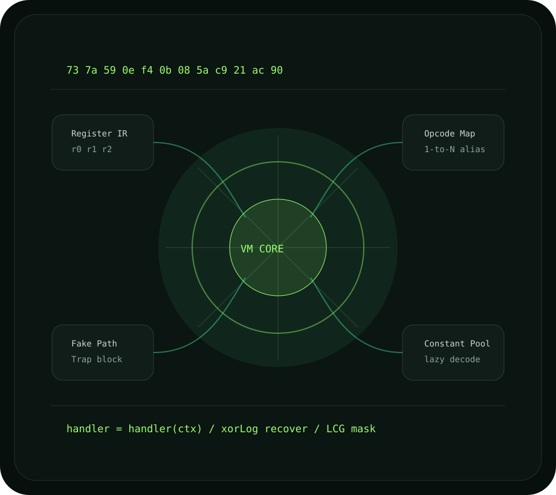
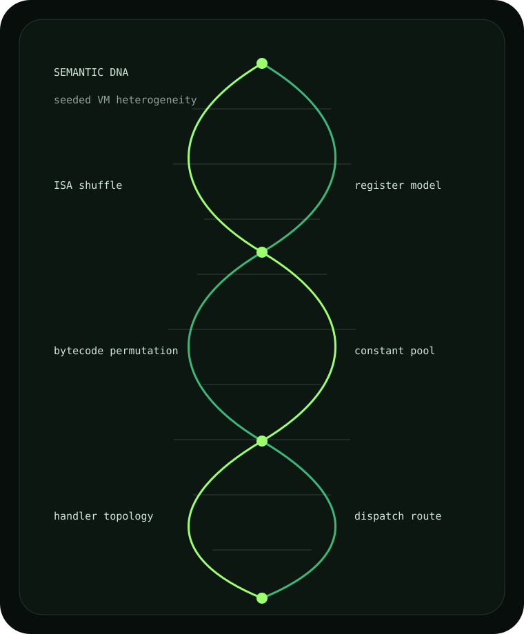

TypeScript project analysis
Uses the TypeScript Compiler API to resolve imports, exports, scope rules, and typed symbols.
Semantic-aware TypeScript VM obfuscator
TSXobf compiles selected functions into a polymorphic JavaScript VM while the rest of your app stays native.

/** @virtualize */
export function calculateSecretHash(input: string) {
let hash = 0;
for (let i = 0; i < input.length; i++) {
hash = (hash << 5) - hash + input.charCodeAt(i);
hash |= 0;
}
return hash;
}TSXobf follows the full project pipeline documented in the repo: TypeScript analysis, semantic graph, IR lowering, transform passes, bytecode compilation, runtime generation, and bundle emission.
Uses the TypeScript Compiler API to resolve imports, exports, scope rules, and typed symbols.
Selected regions are lowered into a VM-safe intermediate representation with explicit control flow.
String pools, symbol indirection, fake paths, generic confusion, namespace virtualization, and debug stripping.
IR instructions compile into encrypted, remapped, build-specific opcode streams.
Runtime handlers execute through polymorphic dispatch and protected private-state access.
The CLI writes protected JavaScript bundles into dist-obf/ for Node, browser, Electron, or workers.

Protects TypeScript functions with real compiler context instead of relying only on rename and dead-code tricks.
One canonical instruction can map to multiple virtual opcodes, randomized per build.
Trap-backed unreachable blocks sit behind congruence predicates designed to waste dynamic exploration.
Strings, numbers, and property lookups are moved into lazy-decoded runtime storage.
Generic, React, Electron, and library profiles keep protection aligned with different deployment surfaces.
Validates a native WebAssembly bootstrap while preserving current bytecode semantics through the JS VM executor.
The project reports real verification and benchmark tradeoffs: VM interpretation raises analysis cost, but it is intentionally used for selected high-value logic because overhead is real.
AST deobfuscators and signature regex tools lose the original execution shape.
Rolling bytecode and opaque predicates raise solver friction but can be traced by determined tools.
A skilled reverser can still recover behavior with enough dynamic analysis time.
This website mirrors the Markdown docs: strong verified coverage is highlighted, and unstable syntax remains explicit instead of being sold as universal JavaScript support.
The path is intentionally simple for a technical buyer: clone the repo, install the workspace, build, and run the CLI against the sample project.
git clone https://github.com/philleyquattro317-arch/ts-vm-obfuscator.git
cd ts-vm-obfuscator
pnpm install
pnpm build
node packages/cli/dist/cli.js -p examples/basic-ts/tsconfig.json --out dist-obf --profile generic